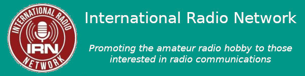

At the heart of IRN operations is our weekly schedule of nets. Nets are held on most days of the week, and we benefit from net controllers with different backgrounds and perspectives. Our net control operators come from North America, Europe, the Caribbean, and elsewhere!
All our nets are open to any licensed operator, and several of our nets are open to licensed and non-licensed operators.
This schedule includes only those nets operated by the IRN on its channels. You will hear other nets on the IRN channels, run by the Extended Freedom Network, the Republic of Avalon Radio, and others. All IRN members are welcome to join any net heard on the IRN channels, subject to the rules of the net. For example, the Republic of Avalon Radio group holds a weekly XYL net for ladies only. Further details may be found at:
For complete connection information for licensed and non-licensed users, please see our connections page.
Please click on the link below to view a PDF version of our current net schedule.